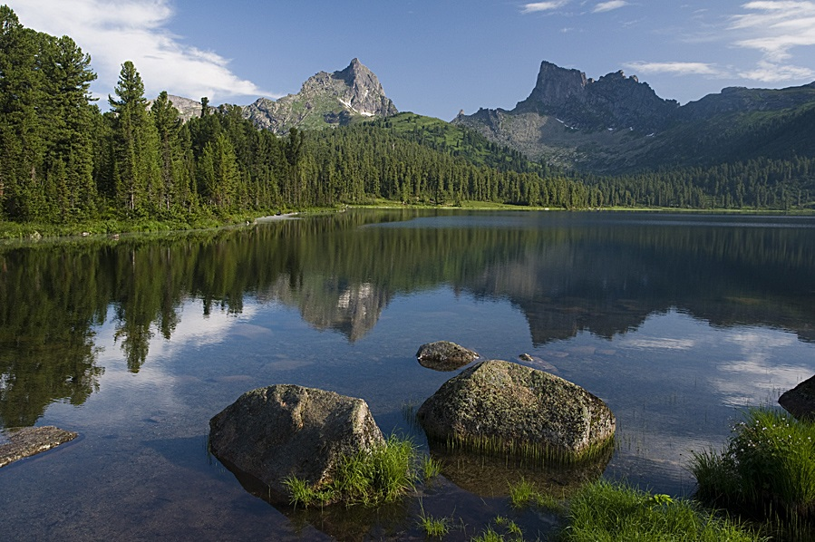

Достопримечательности

Плато Путорана — это уникальный горный массив на северо-западе Красноярского края, известный как «страна озер с крутыми берегами», образованный древними вулканическими извержениями. Его площадь составляет 250 тыс. км², а территория включена в список Всемирного наследия ЮНЕСКО, на ней находится Путоранский заповедник.

Виви — пресноводное озеро в Эвенкийском районе Красноярского края России, занимает верхний участок долины вытекающей из него реки Виви, притока Нижней Тунгуски, принадлежит бассейну Енисея. Озеро Виви расположено в юго-западной части плато Путорана. Наиболее примечательная часть озера — его юго-восточный берег, на который приходится географический центр России.